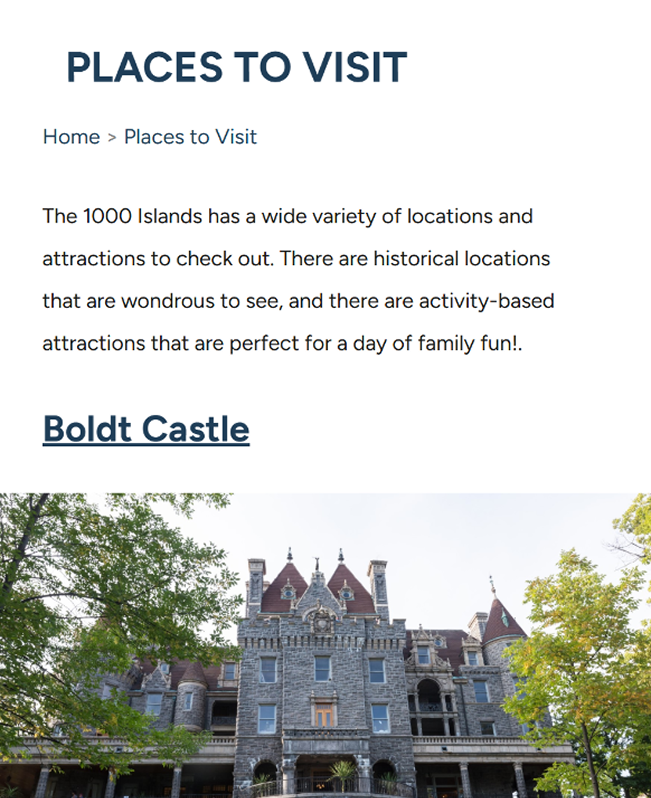
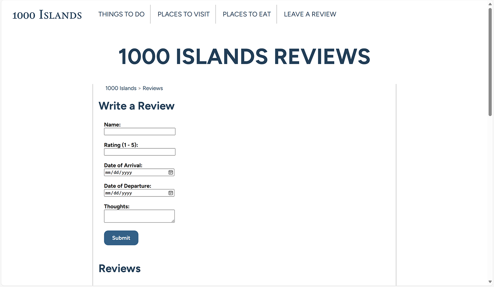
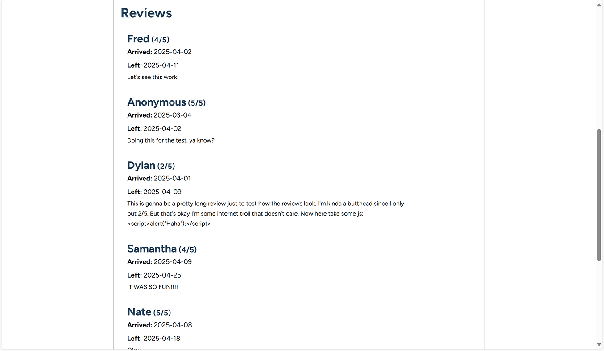

Programming an Informative Travel Website

In a full-stack web programming class, I was tasked with designing and developing a travel website. I decided to create a website for the 1000 Islands and aimed to entice users to travel there with both visual and textual content. The project was hand-coded; no libraries, frameworks, or AI were used.
Goal: Exercise foundational web programming skills while practicing web design, content writing, and content management.
Project Type:
Class, Individual
Role:
Designer, Programmer
Duration:
~ 14 hours
Planning
Before jumping into writing content and programming, I laid out a plan for the site's content and design. To plan, I made an information architecture, a content model, and a static mockup.
Information Architecture
Even though it is a simple site, it helped me determine what pages to include. I aimed to highlight exciting things like landmarks, activities, and fun restaurants.
Content Model
Allowed me to have an idea of page content without committing to writing. It was a helpful guide for when I actually began writing the site's content.
Static Mockup
Helped me determine things such as:
- color usage
- typography & type hierarchy
- general layout
It was a helpful guide when writing CSS.
Programming the Front-End
The first version of the site was static and made using a combination of HTML and CSS.
Unfortunately, the website is hosted on a private university server so I cannot link to it here.
HTML Considerations
Using semantic tags
This is a good development practice and also enhances accessibility.
Providing alt text for images
Using a consistent <section> and <div> structure
CSS Considerations
Using variables for colors
Using relative units when appropriate
Using multiples of 8 for static units
I also used media queries to ensure that the website was responsive.
Desktop/Wide View

Mobile/Narrow View
Programming the Back-End
After the static site was complete, I implemented a back-end using PHP and a mySQL Database.
Benefits of the Back-End
Stored site content on a database
Eliminated reused chunks of HTML
Allowed for a user review feature
User Review Feature
I created a user review feature to practice submitting and receiving data from a backend.
Review Form
User Reviews
Adding Features with JavaScript
Improving the Gallery
Originally, I implemented a simple flat gallery of images. After looking at it further, I decided a carousel would be a better experience since it showcases one photo at a time. The intent is to give more focus for the user to enjoy the details of each photo.
Old
;
New
;Lightbox Feature
I also used JavaScript to make a lightbox feature so images can be seen at an even larger size.
Reflection
The website provides visual and textual information about the 1000 Islands in an engaging way. It works well and helped me to develop my web design and development skills.
Takeaways:
- Plans should include information about implementation (not just design and content).
- Final products usually differ from design mockups in small ways.